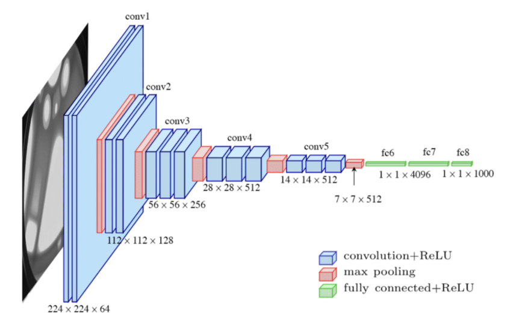

Vgg
Table of Contents
1 Vgg
https://arxiv.org/pdf/1409.1556.pdf 2015/4, oxford
vgg 一般有 vgg16 和 vgg19, 其中 16, 19 是指有权重的 layer 的数目 (conv, fc, 但不 包括 pooling)
VGG 是 oxford visual geometry group, 是提出该模型的机构的名字.
1.1 Network
vgg 实际就是简单的 3x3 卷积的堆叠, 以 vgg16 为例:

VGG(
(features): Sequential(
(0): Conv2d(3, 64, kernel_size=(3, 3), stride=(1, 1), padding=(1, 1))
(1): ReLU(inplace=True)
(2): Conv2d(64, 64, kernel_size=(3, 3), stride=(1, 1), padding=(1, 1))
(3): ReLU(inplace=True)
(4): MaxPool2d(kernel_size=2, stride=2, padding=0, dilation=1, ceil_mode=False)
(5): Conv2d(64, 128, kernel_size=(3, 3), stride=(1, 1), padding=(1, 1))
(6): ReLU(inplace=True)
(7): Conv2d(128, 128, kernel_size=(3, 3), stride=(1, 1), padding=(1, 1))
(8): ReLU(inplace=True)
(9): MaxPool2d(kernel_size=2, stride=2, padding=0, dilation=1, ceil_mode=False)
(10): Conv2d(128, 256, kernel_size=(3, 3), stride=(1, 1), padding=(1, 1))
(11): ReLU(inplace=True)
(12): Conv2d(256, 256, kernel_size=(3, 3), stride=(1, 1), padding=(1, 1))
(13): ReLU(inplace=True)
(14): Conv2d(256, 256, kernel_size=(3, 3), stride=(1, 1), padding=(1, 1))
(15): ReLU(inplace=True)
(16): MaxPool2d(kernel_size=2, stride=2, padding=0, dilation=1, ceil_mode=False)
(17): Conv2d(256, 512, kernel_size=(3, 3), stride=(1, 1), padding=(1, 1))
(18): ReLU(inplace=True)
(19): Conv2d(512, 512, kernel_size=(3, 3), stride=(1, 1), padding=(1, 1))
(20): ReLU(inplace=True)
(21): Conv2d(512, 512, kernel_size=(3, 3), stride=(1, 1), padding=(1, 1))
(22): ReLU(inplace=True)
(23): MaxPool2d(kernel_size=2, stride=2, padding=0, dilation=1, ceil_mode=False)
(24): Conv2d(512, 512, kernel_size=(3, 3), stride=(1, 1), padding=(1, 1))
(25): ReLU(inplace=True)
(26): Conv2d(512, 512, kernel_size=(3, 3), stride=(1, 1), padding=(1, 1))
(27): ReLU(inplace=True)
(28): Conv2d(512, 512, kernel_size=(3, 3), stride=(1, 1), padding=(1, 1))
(29): ReLU(inplace=True)
(30): MaxPool2d(kernel_size=2, stride=2, padding=0, dilation=1, ceil_mode=False)
)
(avgpool): AdaptiveAvgPool2d(output_size=(7, 7))
(classifier): Sequential(
(0): Linear(in_features=25088, out_features=4096, bias=True)
(1): ReLU(inplace=True)
(2): Dropout(p=0.5, inplace=False)
(3): Linear(in_features=4096, out_features=4096, bias=True)
(4): ReLU(inplace=True)
(5): Dropout(p=0.5, inplace=False)
(6): Linear(in_features=4096, out_features=1000, bias=True)
)
)
整个网络分为三部分:
features
网络的前 13 层为特征提取部分, 输出为14x14x512, 以 vgg16 做为 backbone 的模型 通常只会使用这部分.
avgpool
features 后面的 7x7x512 是一个 adaptive average pooling
classifier
class 是三层 fc, 用来完成最后的分类
vgg features 部分的设计的特点是:
- feature map 大小相等的层, 其 filter 个数也相同
- feature map 大小减半时, filter 个数增大一倍
1.2 Very Deep Convolutional Networks
vgg 的论文标题是 `Very Deep Convolutional Networks For Large-Scale Image Recognition`, 和之前的模型相比 `very deep`, 因为:
- 所有的 conv2d 都是 3x3, 计算量较小
- 因为 3x3 的 kernel 较小, 网络可以变得很深 (16-19 层)
当然 16 层的深度与 152 层的 ResNet 相比还是小很多. vgg 之后, 更深的网络因为梯度 消失的问题无法工作, 才有了 ResNet.
Backlinks
MobileNet (MobileNet): moblienet 是在 Vgg 的基础上把 3x3 conv2d 换成 SeparatableConv2D, 使得它的参数和 flops 降低很多, 更适合移动端使用.
SSD (SSD > network): 这个图片是 ssd 使用 Vgg16 做 backbone 时的模型 (前面描述尺寸的都是基于 mobienet), 6 个 level 的 feature map 为 [38, 19, 10, 5, 3, 1], 共 8732 个 anchor
AlexNet (AlexNet > Network): 在 alexnet 的基础上, vgg 把所有 conv 都换成 3x3, 以支持更深的网络.
Image Classification (Image Classification > Vgg): Vgg